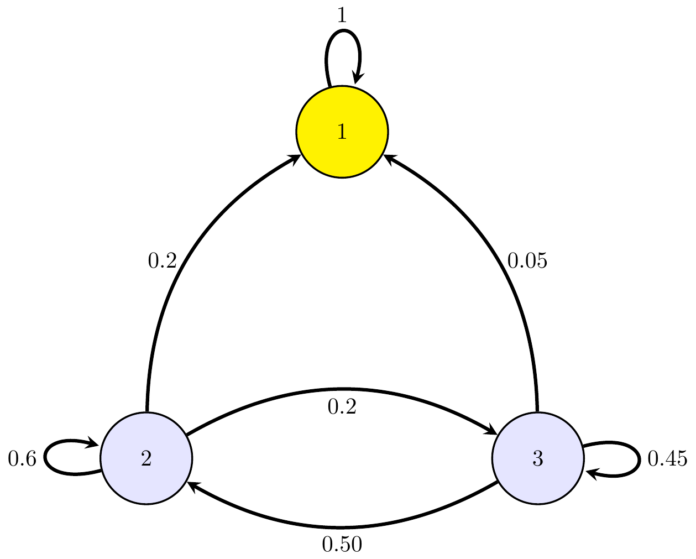

2 Cadeias de Markov em tempo discreto
2.1 Introdução
Uma cadeia de Markov em tempo discreto, \(\{X_t, t \in T\}\), é um PE de Markov cujo espaço de estados é finito ou infinito numerável.
2.1.1 Conceitos básicos
Definição 2.1 (Cadeia de Markov em tempo discreto) Um PE em tempo discreto \((X_n, ~n \in \mathbb{N}_0)\) com espaço de estados \(E\) discreto é uma C.M. em tempo discreto sse satisfaz a propriedade de Markov \[\forall ~n \in \mathbb{N}, ~\forall ~x_0, \ldots, x_{n+1} \in E^{n+1}: P(X_0=x_0, \ldots, X_n=x_n)>0, \text{tem-se que }\] \[P(X_{n+1}=x_{n+1} \mid X_{0}=x_0, \ldots X_{n}=x_n)=P(X_{n+1}=x_{n+1} \mid X_{n}=x_n).\]
\(\,\)
Exercício 2.1 Seja \((X_n, ~n=1,2,\dots)\) uma sucessão de variáveis aleatórias i.d.d. com distribuição de probabilidade definida por: \[P(X_n=x)=p(1-p)^x, \quad x=0,1,2,\dots; ~ p \in (0,1).\] Considere ainda o PE \[Y=(Y_n=\sum\limits_{i=1}^{n}X_i: ~n=1,2,\dots).\]
Identifique o espaço de estados de \(Y\).
Mostre que \(P(Y_{n+1}=y \mid Y_n=x)\) é independente de \(n\).
Verifique que \(Y\) é uma Cadeia de Markov.
Calcule \(P(Y_1=y_1, Y_3=y_3)\).
\(\,\)
Exercício 2.2 Seja \((X_n, ~n=1,2,\dots)\) uma sucessão de variáveis aleatórias i.d.d. com distribuição de probabilidade definida por: \[P(X_n=1)=p=1-P(X_n=-1), \quad n=1,2,\dots; ~p \in (0,1).\] Considere o PE \(S=(S_n: ~n\geq 0)\), conhecido como passeio aleatório simples, definido por: \[S_0=0 \quad \text{e} \quad S_n=\sum\limits_{i=1}^{n}X_i, ~n=1,2,\dots\]
Identifique o espaço de estados do processo \(S\).
Prove que \(S\) é uma Cadeia de Markov para qualquer valor de \(p\).
Determine para que valores de \(p\), o passeio aleatório \(S\) é uma Martingala.
Calcule a função de autocovariância do processo \(S\) e verifique se o processo é estacionário em sentido estrito.
\(\,\)
Associada a uma C.M. em tempo discreto tem-se a função de probabilidade de transição a um passo: \[P(X_{n+1}=j \mid X_n=i):=P_{ij}(n,n+1),\] que representa a probabilidade de \(X_{n+1}\) estar no estado \(j\) no instabte \(n+1\) sabendo que no instante \(n\) a cadeia estava no estado \(i\).
Se as probabilidades \(P_{ij}(n,n+1)\) não dependerem de \(n\), então a C.M. em tempo discreto diz-se homogénea. Assim, numa C.M. homogénea observa-se
\[P(X_{n+1}=j \mid X_n=i):=P_{ij},~\forall ~i,j \in E, ~\forall ~n \in \mathbb{N}_0.\] \(\,\)
Nota. A expressão \(P(X_{n+1}=j \mid X_n=i):=P_{ij}\):
representa a probabilidade de cadeia ir do estado \(i\) para o estado \(j\) num só passo;
é independente de \(n\), isto é, é homogénea no tempo.
\(\,\)
Nesta UC apenas iremos estudar C.M. homogéneas. As probabilidade de transição, \(P_{ij}\) são fundamentais para o estudo da estrutura probabilística das C.M.
\(\,\)
Definição 2.2 (Matriz de transição) Define-se Matriz de transição ou Matriz de probabilidade de transição de uma C.M. homogénea à matriz \[\mathbb{P}=[P_{ij}]_{~i,j \in E}= \begin{bmatrix} P_{00} & P_{01} & \dots & P_{0j} & \dots \\ P_{10} & P_{11} & \dots & P_{1j} & \dots \\ \vdots & \vdots & \vdots & \vdots & \vdots \\ P_{i0} & P_{i1} & \dots & P_{ij} & \dots \\ \vdots & \vdots & \vdots & \vdots & \vdots \\ \end{bmatrix}, \qquad E=\mathbb{N}_0\] definida pelas probabilidades de transição \(P_{ij}\) do processo.
\(\,\)
Nota. Na matriz de transição \(\mathbb{P}\), observa-se:
\(0 \leq P_{ij} \leq 1, ~i,j=0,1,\ldots\), uma vez que \(P_{ij}\) representa uma probabilidade;
\(\sum\limits_{j=0}^{+\infty} P_{ij}=1\), uma vez que \(\sum\limits_{j \in E} P_{ij}=\sum\limits_{j \in E}P(X_{n+1}=j \mid X_n=i)\).
\(\,\)
Exercício 2.3 Quatro bolas, duas brancas e duas pretas, são distribuídas em duas caixas \(A\) e \(B\), de tal forma que, em cada caixa, ficam duas bolas. Tira-se uma bola de cada caixa e coloca-se cada uma na caixa oposta. Seja \(X_0\) o número de bolas brancas que existiam inicialmente na caixa \(A\). Para \(n \geq 1\), seja \(X_n\) o número de bolas brancas que existirão na caixa \(A\) depois de se terem efetuado \(n\) trocas de bolas.
Identifique o espaço de estados.
Determine a matriz das probabilidades de transição.
\(\,\)
Teorema 2.1 Um PE \((X_t, ~t \in \mathbb{N}_0)\) é uma C.M. homogénea sse existe uma distribuição de \(X_0\) e uma matriz estocástica \(\mathbb{P}\) tal que: \[\forall ~(i_0,i_1,\ldots,i_n) \in \mathbb{N}_0^{n+1}: P(X_0=i_0, X_1=i_1, \ldots, X_n=i_n)=P(X_0=i_0)P_{i_0i_1} \ldots P_{i_{n-1}i_n}.\] Este Teorema mostra que a distribuição do vetor aleatório \((X_0,X_1,\ldots,X_n)\) fica completamente determinada se conhecermos a distribuição inicial de \(X_0\) e matriz de transição \(\mathbb{P}\).
\(\,\)
Exemplo 2.1 (Passeio aleatório) Seja \((Y_n)_{n \in \mathbb{N}_0}\) uma sequência de variáveis aleatórias independentes que tomam valores em \(\mathbb{Z}\). A primeira variável, \(Y_0\), pode ter uma distribuição diferente, mas as outras \(Y_n\), para \(n \geq 1\), têm todas a mesma distribuição \(p(x)\), para \(x \in \mathbb{Z}\).
O processo definido por \[ X_n = \sum_{m=0}^n Y_m, \quad n \in \mathbb{N}_0, \] chama-se passeio aleatório (ou deslocação de um ponto no plano), tendo estado inicial \(X_0\) e distribuição \(p\).
\(\,\)
Exercício 2.4
Mostre que o processo aleatório definido no exemplo anterior é uma C.M. homogénea com matriz de transição com probabilidades \[P_{xy}=p(y-x), ~\forall ~(x,y) \in \mathbb{Z}.\]
\(\,\)
Exemplo 2.2 (Passeio aleatório unidimensional) Um passeio aleatório a uma dimensão é uma C.M. cujo espaço de estados é um conjunto finito ou infinito numerável de inteiros, no qual a partícula estando no estado \(i\), pode deslocar-se, numa transição, para o estado \(i+1\), \(i-1\), ou permanecer no estado \(i\), isto é,
\[ P(X_{n+1}=j \mid X_n=i)= \begin{cases} q_i, \quad j=i-1\\ r_i, \quad j=i,\\ p_i, \quad j=i+1.\\ \end{cases} \] A matriz de transição é definida por
\[\mathbb{P}= \begin{bmatrix} r_0 & p_0 & 0 & 0 & \dots \\ q_1 & r_1 & p_1 & 0 & \dots \\ 0 & q_2 & r_2 & p_2 & \vdots \\ \vdots & \vdots & \vdots & \vdots & \vdots \\ \end{bmatrix},\] onde \(q_i>0, ~r_i>0, ~p_i>0; ~q_i+r_i+p_i=1, ~i=1,2,\ldots; ~p_0 \geq 0, ~r_0 \geq 0: ~r_0+p_0=1.\)
Em particular, quando no instante \(n\) o processo está no estado \(i\), isto é, quando \(X_n=i\), observa-se:
\(P(X_{n+1}=i+1 \mid X_n=i)=p_i\);
\(P(X_{n+1}=i-1 \mid X_n=i)=q_i\);
\(P(X_{n+1}=i \mid X_n=i)=r_i\).
\(\,\)
Exemplo 2.3 (Versão discreta do movimento Browniano) Trata-se de um caso particular do passeio aleatório unidimensional com: \[q_i=q, ~r_i=r, ~ p_i=p, ~\forall ~i.\] Interpretação: uma partícula, no instante \(t\), pode efetuar 3 movimentos:
deslocar-se para a direita com probabilidade \(p\);
deslocar-se para a esquerda com probabilidade \(q\);
manter-se na mesma posição com probabilidade \(r\);
Se \(X_n\) representar a posição da partícula ao fim de \(n\) movimentos, tem-se \[X_n=\sum\limits_{i=0}^n Y_i,\] onde \[ Y_i= \begin{cases} 1, & \text{partícula deslocou-se para a direita},\\ -1, & \text{partícula deslocou-se para a esquerda},\\ 0, & \text{partícula não se deslocou}.\\ \end{cases} \]
O que representam os processos \(X\) e \(Y\)?
\((Y_n, ~n \in \mathbb{N}_0)\): sucessão de v.a.’s independentes (são independentes da posição \(X_n\) da partícula);
\((X_n, ~n \in \mathbb{N}_0)\): passeio aleatório, isto é, CM homogénea, com espaço de estados \(\mathbb{Z}\) e matriz de transição \(\mathbb{P}\) onde:
\[ P_{ij}=P(X_n=j \mid X_{n-1}=i)= \begin{cases} p, \quad j=i+1,\\ q, \quad j=i-1,\\ r, \quad j=i.\\ \end{cases} \] Assim, \(P_{ij}=p(j-i)\) representa a lei de probabilidade (distribuição de probabilidade) de \(Y_n\). Tipicamente considera-se \(p=q=0.5\) e \(r=0\).
\(\,\)
Nota. Notação: \[P^m_{ij}=P(X_{n+m}=j \mid X_n=i)\] representa a probabilidade de, em \(m\) passos, a cadeia de Markov homogénea passar do estado \(i\) para o estado \(j\).
\(\,\)
Teorema 2.2 Seja \(\mathbb{P}=[P_{ij}]\) a matriz de transição a um passo de uma C.M. \((X_n, ~n \in \mathbb{N}_0)\). Então, \[P^m_{ij}=\sum\limits_{k=0}^{+\infty}P_{ik}^r ~ P_{kj}^s,\] onde \((r,s) \in \mathbb{N}_0^2\) tal que \(r+s=m\) e \(P_{ij}^0=1\) se \(i=j\), e \(P_{ij}^0=0\) se \(i \neq j\).
\(\,\)
Exercício 2.5
Considere \(m=2\) e prove o Teorema anterior.
\(\,\)
Teorema 2.3 (Equações de Chapman-Kolmogorov) O Teorema anterior pode ser re-escrito como \[P^{m+n}_{ij}=\sum\limits_{k \in E}P_{ik}^m ~ P_{kj}^n, \quad \forall ~i,j \in E.\] Assim, \(P_{i,j}^m\) representa o elemento \((i,j)\) da matriz potência de ordem \(m\) de \(\mathbb{P}\).
2.2 Classificação de estados de uma C.M.
Torna-se importante o estudo limite de \(P_{i,j}^n\) quando \(n \to +\infty\). Espera-se que a influência do estado inicial \(i\) diminua com o tempo, e que o limite de \(P_{i,j}^n\) quando \(n \to +\infty\) seja independente de \(i\).
Para se poder analisar o comportamento assintótico do processo, vamos introduzir alguns critérios de classificação de estados de uma C.M.. Consideremos, no que se segue, uma C. M. \((X_n, n \in \mathbb{N}_0)\) com matriz de transição \(\mathbb{P}=[P_{i,j}], ~i,j \in E\).
\(\,\)
Definição 2.3 (Estado acessível) Diz-se que o estado \(j \in E\) é acessível a partir do estado \(i \in E\), se para algum \(n \in \mathbb{N}_0\) se observa \(P_{ij}^n>0\). Representação:
Figura 2.1: Estado acessível
\(\,\)
Definição 2.4 (Estados em comunicação) Se dois estados \(i,j \in E\) são acessíveis um relativamente ao outro, diz-se que intercomunicam ou que estão em comunicação. Representação:
Figura 2.2: Estados em comunicação
\(\,\)
Nota. Se dois estados \(i,j \in E\) não comunicam, então: \[\forall ~n \in \mathbb{N}_0, ~P_{ij}^n=0 ~\vee ~ P_{ji}^n=0.\]
\(\,\)
Teorema 2.4 A intercomunicação dos estados define uma relação de equivalência.
\(\,\)
Exercício 2.6
Mostre o Teorema anterior. Sugestão: mostre que a intercomunicação entre estados é reflexiva, simétrica e transitiva.
\(\,\)
Nota. A relação de equivalência do último Teorema induz uma partição do conjunto de todos os estados em classe de equivalência. Dentro de cada classe todos os estados comunicam entre si.
\(\,\)
Exemplo 2.4 Considere a seguinte matriz de transição, com \(E=\{0,1,2,\dots,r\}\), de um passeio aleatório: \[\mathbb{P}= \begin{bmatrix} 1 & 0 & 0 & 0 & \dots & 0 & 0 \\ q & 0 & p & 0 & \dots & 0 & 0 \\ 0 & q & 0 & p & \dots & 0 & 0 \\ \dots & \dots & \dots & \dots & \dots & \dots & \dots \\ 0 & 0 & 0 & 0 & q & 0 & p \\ 0 & 0 & 0 & 0 & \dots & 0 & 1 \\ \end{bmatrix}.\] A relação de equivalência de comunicação induz as classes: \[\{0\}, ~ \{1,2,\dots,r-1\}, ~\{r\},\] donde se conclui que: do estado \(0\) só se pode ir para o estado \(0\); todos os estados \(1,2,\dots,r-1\) comunicam entre si; do estado \(r\) só se pode ir para o estado \(r\). Para \(r=5\), isto é, 6 estados, a matriz de transição é: \[ \mathbb{P} = \begin{bmatrix} 1 & 0 & 0 & 0 & 0 & 0 \\ q & 0 & p & 0 & 0 & 0 \\ 0 & q & 0 & p & 0 & 0 \\ 0 & 0 & q & 0 & p & 0 \\ 0 & 0 & 0 & q & 0 & p \\ 0 & 0 & 0 & 0 & 0 & 1 \\ \end{bmatrix} \] e a representação gráfica é:
As classes de equivalência estão representadas por cores.
\(\,\)
Definição 2.5 (Período) Chama-se período do estado \(i\), e representa-se por \(d(i)\), ao máximo divisor comum de todos os inteiros \(n\geq 1\) tais que \(P_{ii}^n > 0\), isto é, \[d(i)=\text{m.d.c.}(n \geq 1: P_{ii}^n >0).\] Convenção: se \(\forall ~n \geq 1, P_{ii}^n=0\), então \(d(i)=0\).
\(\,\)
Nota. Dois estados em comunicação têm o mesmo período, isto é,
\[i \longleftrightarrow j \iff d(i)=d(j).\]
\(\,\)
Exercício 2.7 Determine o período dos estados do exemplo anterior.
\(\,\)
Exercício 2.8 Considere a C.M. de espaço de estados finito com matriz de transição \[ \mathbb{P} = \begin{bmatrix} 0 & 1 & 0 & \dots & 0 \\ 0 & 0 & 1 & \dots & 0 \\ \vdots & \vdots & \vdots & \vdots & \vdots \\ 0 & 0 & 0 & \dots & 1 \\ 1 & 0 & 0 & \dots & 0 \\ \end{bmatrix}, \quad E=\{0,1,\dots,n-1\}. \] Mostre que \(d(i)=n, ~\forall ~n \in E.\)
\(\,\)
Definição 2.6 (Estado aperiódico. Cadeia aperiódica.) Um estado diz-se aperiódico se tem período um. A cadeia é aperiódica se todos os estados acessíveis entre si (isto é, na mesma classe de comunicação) são aperiódicos.
\(\,\)
Definição 2.7 (Estado recorrente) Um estado \(i\) diz-se recorrente se, partindo de \(i\), a probabilidade de regressar a \(i\) em algum instante futuro é igual a \(1\).
Seja \[ T_i = \inf \{ n \geq 1 : X_n = i \mid X_0 = i \}, \] o tempo de retorno ao estado \(i\), isto é, o primeiro instante (após a partida) em que a cadeia volta a atingir o estado \(i\).
Então, o estado \(i\) é recorrente se \[ P(T_i < +\infty) = 1. \]
De forma equivalente, um estado \(i\) é recorrente se \[ \sum_{n=1}^\infty P_{ii}^n = +\infty, \] onde \(P_{ii}^n = P(X_n = i \mid X_0 = i)\) representa a probabilidade de estar em \(i\) ao fim de \(n\) passos, partindo de \(i\).
\(\,\)
Definição 2.8 (Estado transitório) Um estado \(i\) diz-se transitório se, partindo do estado \(i\), a probabilidade de retorno a \(i\) é menor que 1, isto é, \[ P(T_i < +\infty) < 1, \] equivalentemente, \[ \sum_{n=1}^\infty P_{ii}^n < +\infty. \]
\(\,\)
Definição 2.9 (Tempo mínimo de passagem) Considere-se a v.a. \(T_{ij}\), que representa o tempo da primeira passagem do estado \(i\) ao estado \(j\), definida por \[ T_{ij} = \min\{n \geq 1 : X_n = j\}. \]
A função de probabilidade de \(T_{ij}\), denotada por \(f_{ij}^n\), é dada por: \[ f_{ij}^n = P_i(X_n = j,~ X_1 \ne j, \ldots, X_{n-1} \ne j), \quad n \geq 1. \]
Isto é, \(f_{ij}^n\) representa a probabilidade de, partindo do estado \(i\), chegar ao estado \(j\) pela primeira vez ao fim de \(n\) passos.
Em particular: \[ f_{ij}^1 = P_{ij}, \quad \text{e} \quad f_{ij}^0 = 0, \quad \forall i, j \in E,~ i \neq j. \]
Uma outra forma de interpretar \(T_{ij}\) é como o tempo de espera até à primeira chegada ao estado \(j\), tendo começado em \(i\).
Para \(n \geq 2\) e \(i \neq j\), a função de primeira passagem satisfaz a seguinte relação de recorrência: \[ f_{ij}^n = \sum_{k \in E \setminus \{j\}} P_{ik} \, f_{kj}^{n-1}. \]
Esta fórmula diz-nos que, para chegar pela primeira vez a \(j\) no passo \(n\), o processo deve ir de \(i\) para um estado \(k \neq j\) no primeiro passo (com probabilidade \(P_{ik}\)), e depois ir de \(k\) até \(j\) pela primeira vez ao fim de \(n-1\) passos (com probabilidade \(f_{kj}^{n-1}\)).
Condições iniciais: \[ f_{ij}^1 = P_{ij}, \quad \text{e} \quad f_{ij}^0 = 0, \quad \forall~i,j \in E,~i \neq j. \]
\(\,\)
Teorema 2.5 \[\forall ~n \in \mathbb{N}: P_{ij}^n=\sum\limits_{k=1}^n f_{ij}^k \, P_{jj}^{n-k}.\]
\(\,\)
Exercício 2.9 Faça a demonstração do Teorema anterior.
\(\,\)
Teorema 2.6 Considere-se a probabilidade: \[f_{ij}=P(\text{partindo de } i, \text{ eventualmente chegar a } j, \text{ num número finito de passos}).\] Então, \[f_{ij}=\sum\limits_{n=1}^{+\infty}f_{ij}^n,\] isto é, \(f_{ij}\) representa a soma da probabilidade de sair de \(i\), chegar a \(j\), pela 1ª vez, em \(k\) passos, e
\[f_{ij}>0 \iff j \text{ é acessível a partir de } i.\]
\(\,\)
Definição 2.10 (Estado recorrente) O estado \(i\) diz-se recorrente (ou persistente) sse \[\sum\limits_{n=1}^{+\infty}f_{ii}^n=1,\] isto é, dizer que o estado \(i\) é recorrente significa que, partindo de \(i\), volta-se com probabilidade 1 a \(i\), num número finito de transições. Por outras palavras, há sempre a possibilidade de sair de \(i\) e chegar a \(i\) em \(n\) passos.
Em termos da v.a. \[T_{ij}= \text{ tempo mínimo para transitar do estado } i \text{ para o estado } j,\] uma vez que \[f_{ij}^n=P(T_{ij}=n),\] então a definição de recorrência pode ser reescrita como: \[i \text{ é recorrente } \iff P(T_{ii}<+\infty)=1.\]
\(\,\)
Definição 2.11 (Estado transitório) O estado \(i\) diz-se transitório se a probabilidade de voltar a \(i\), partindo de \(i\), for estritamente menor que 1, ou seja: \[ \sum_{n=1}^{+\infty} f_{ii}^n < 1. \] Isto significa que, partindo de \(i\), existe uma probabilidade positiva de não regressar a \(i\). Em termos da variável aleatória \(T_{ii}\), isto é equivalente a: \[ i \text{ é transitório} \iff P(T_{ii} < +\infty) < 1. \]
Muito usado para a verificação se um estado é recorrente é o seguinte Teorema:
Teorema 2.7 (Teorema de Abel) Um estado \(i\) é recorrente sse \[\sum\limits_{n=1}^{+\infty}P_{ii}^n=+\infty.\]
\(\,\)
Teorema 2.8 (Critério de recorrêcia e transitoriedade) \[\sum\limits_{n=1}^{+\infty}P_{ii}^n=+\infty \iff i \text{ é recorrente}.\] \[\sum\limits_{n=1}^{+\infty}P_{ii}^n<+\infty \iff i \text{ é transitório}.\] \[i \longleftrightarrow j \text{ e } i \text{ é recorrente}\implies j \text{ é recorrente}.\]
\(\,\)
Nota. O último critério apresentado no Teorema anterior mostra que a recorrência é uma propriedade da classe, isto é, numa classe de equivalência todos os estados são recorrentes ou não são recorrentes. Consequentemente:
de um estado recorrente só se podem alcançar estados recorrentes;
o conjunto dos estados recorrentes forma num conjunto fechado.
\(\,\)
Teorema 2.9 Se \(i\) é um estado recorrente e se \(j\) é acessível a partir de \(i\), então \(f_{ij}=1\).
\(\,\)
Definição 2.12 (Conjunto fechado) Seja um C.M. com espaço de estados \(E\) e matriz de transição \(\mathbb{P}=[P_{ij}]_{i,j \in E}\). Diz-se que um conjunto \(C \subset E\) é fechado sse \[\forall ~i \in C, ~\forall ~\ j \notin C, ~P_{ij}=0,\] ou seja, sse nenhum estado não pertencente a \(C\) é acessível a partir de qualquer estado do conjunto \(C\). Isto quer dizer que:
não existem “setas” de dentro para fora de \(C\);
uma classe de estados não é necessariamente um conjunto fechado.
\(\,\)
Resumo: critérios para estabelecer a recorrência/transitoriedade
Critério 1: \[\sum\limits_{n=1}^{+\infty}f_{ii}^n=1 \implies \text{ estado recorrente}.\] \[\sum\limits_{n=1}^{+\infty}f_{ii}^n<1 \implies \text{ estado transitório}.\]
Critério 2: \[P(T_{ii}<+\infty)=1 \implies \text{ estado recorrente}.\] \[P(T_{ii}<+\infty)<1\implies \text{ estado transitório}.\]
Critério 3: \[\sum\limits_{n=0}^{+\infty}P_{ii}^n=+\infty \implies \text{ estado recorrente}.\] \[\sum\limits_{n=0}^{+\infty}P_{ii}^n<+\infty \implies \text{ estado transitório}.\]
\(\,\)
Resumo: classificação de estados recorrentes
Defina-se \(E[T_{ii}]=\mu_i=\sum\limits_{n=1}^{+\infty}nf_{ii}^n\), isto é, \(\mu_i\) representa o tempo de recorrência médio de um estado \(i\) (recorrente).
O estado \(i\) é:
recorrente positivo se \(\mu_i<+\infty\), isto é, o tempo médio de recorrência do estado \(i\) é finito;
recorrente nulo se \(\mu_i=+\infty\);
recorrente ergódico se \(i\) for recorrente positivo e aperiódico.
\(\,\)
Definição 2.13 (Cadeia de Markov irredutível) Uma cadeia de Markov com espaço de estados \(E\) diz-se irredutível se, para quaisquer estados \(i, j \in E\), existe um número natural \(n \geq 1\) tal que \[ P_{ij}^n = P(X_n = j \mid X_0 = i) > 0, \] isto é, existe uma probabilidade positiva de se atingir o estado \(j\) a partir do estado \(i\) num número finito de passos.
Em termos informais, isto significa que todos os estados da cadeia comunicam entre si, ou seja, é possível ir de qualquer estado para qualquer outro (talvez em vários passos), com probabilidade positiva.
\(\,\)
Exemplo 2.5 Considere uma cadeia de Markov com espaço de estados \(\{0, 1, 2\}\) e matriz de transição \[ \mathbb{P} = \begin{bmatrix} 0 & 1 & 0 \\ 0 & 0 & 1 \\ 1 & 0 & 0 \end{bmatrix}. \]
Esta cadeia é irredutível porque, partindo de qualquer estado, é possível atingir qualquer outro estado num número finito de passos, com probabilidade positiva. Por exemplo: \[ 0 \longrightarrow 1 \longrightarrow 2 \longrightarrow 0, \] o que permite circular por todos os estados.
\(\,\)
Por último, temos o seguinte Teorema que ajuda a classificar os estados de uma cadeia de Markov:
Teorema 2.10 Numa cadeia de Markov irredutível com espaço de estados finito ou infinito numerável, ou todos os estados são transitórios, ou todos os estados são recorrentes nulos, ou todos os estados são recorrentes positivos.
\(\,\)
Exercício 2.10 Seja \(X_0, X_1, X_2, \dots\) uma sucessão de variáveis aleatórias i.i.d.’s tal que: \[P(X_i=-1)=P(X_i=1)=0.5, \quad i=0,1,2,\dots.\]
- Prove que \((X_n: ~n \in \mathbb{N}_0)\) é uma C.M. homogénea com matriz de transição
\[\mathbb{P}= \begin{bmatrix} 0.5 & 0.5 \\ 0.5 & 0.5 \\ \end{bmatrix}. \]
Determine a probabilidade de que o processo \((X_n: ~n \in \mathbb{N}_0)\), partindo do estado 1, volte a atingir este estado, pela primeira vez, num número par de passos.
Considere o PE \((Y_n: ~n \in \mathbb{N})\) definido por:
\[ Y_n= \begin{cases} X_{n-1} \cdot X_{n+1}, & n \text{ par}\\ X_{n}, & n \text{ ímpar} \end{cases}. \]
Verifique se \(Y\) é um ruído branco e, em caso afirmativo, identifique a sua variância. Prove que \(Y\) não é uma C.M.
\(\,\)
Exercício 2.11 Considere uma estação de táxis, onde de \(s\) em \(s\) segundos chega um táxi. Se não existem clientes a ser servidos, o táxi parte de imediato, chegando outro \(s\) segundos depois. Caso contrário, os clientes vão sendo atendidos por ordem de chegada, havendo sempre um período de tempo constante de \(s\) segundos entre cada serviço. Durante esse período de tempo podem, no entanto, chegar novos clientes. Suponhamos que o número de chegadas ao \(n-\)ésimo período de tempo é uma variável aleatória \(Z_n\) cuja distribuição é independente do período em que ocorrem as chegadas, e é dada por \[P(\text{k clientes chegarem num intervalo de tempo entre 2 chegadas consecutivas de táxi})= a_k,\] onde \(a_k \geq 0, ~\forall ~k \in \mathbb{N}_0\), e \(\sum\limits_{k=0}^{+\infty}a_k=1\).
O estado do sistema no início do \((n+1)-\)ésimo período de tempo entre duas chegadas consecutivas de táxi é definido pelo número de clientes que esperam para serem atendidos, sendo esse número representado por \(X_n, ~n \in \mathbb{N}_0\).
Prove que \(\{X_n, ~n \in \mathbb{N}_0\}\) é uma C.M. homogénea. Indique os respetivos espaço de estados e matriz de transição.
Sabendo que no início de um determinado intervalo a fila tem zero clientes, qual a probabilidade de o sistema voltar a atingir este estado (pela primeira vez) ao fim de três chegadas de táxis?
\(\,\)
Exercício 2.12 Seja \(\{Y_i^{(n)} : i, n \in \mathbb{N} \}\) uma família de variáveis aleatórias independentes e identicamente distribuídas com distribuição binomial \(B(2; 0.5)\).
Considere um processo estocástico \(\{X_n\}_{n \in \mathbb{N}_0}\) definido por: \[ X_0 = a, ~\text{ com } a \in \mathbb{N} \text{ fixo, e para todo } n \geq 1: \quad X_n = \begin{cases} \sum\limits_{i=1}^{X_{n-1}} Y_i^{(n)}, & \text{se } X_{n-1} \geq a. \\ a, & \text{se } X_{n-1} < a \end{cases} \]
Identifique o espaço de estados do processo \(X\).
Prove que \(X\) é uma C.M. homogénea e identifique a matriz de transição.
\(\,\)
Exercício 2.13 Determinado ser vivo produz, durante a sua vida, um número de descendentes \(Y\) de acordo com uma distribuição dada por: \[\forall ~k \in \mathbb{N}_0, ~P(Y=k)=\dfrac{\lambda^k}{k!}e^{-\lambda}, \quad \lambda >0 \text{ constante}.\] A cada indivíduo \(i\) da população associamos uma v.a. \(Y_i=\) número de descendentes do indivíduo \(i\). Para cada \(n \in \mathbb{N}_0\), define-se a v.a. \(X_n\) que representa o tamanho da população na geração de ordem \(n\). Considere o PE \((X_n: ~n \in \mathbb{N}_0)\).
Prove que \((X_n: ~n \in \mathbb{N}_0)\) é uma C.M. homogénea.
Calcule a probabilidade de existirem \(k \in \mathbb{N}_0\) indivíduos na geração de ordem \(n+2\), sabendo que na geração de ordem \(n\) existiam \(j \in \mathbb{N}_0\).
\(\,\)
Exercício 2.14 Considere lançamentos repetidos de um dado honesto. Seja \(X_n\) o máximo dos números que ocorreram nos \(n\) primeiros lançamentos.
Indique o espaço de estados da C.M. \((X_n: ~n \in \mathbb{N})\) e a respetiva matriz de transição.
Determine \(P(X_i=i), ~i=1,2,\dots,6\) e \(P(X_2=3)\).
Desenhe o grafo da cadeia, classifique os seus estados, e analise o tipo de recorrência.
Verifique que a cadeia é aperiódica.
\(\,\)
Exercício 2.15 Seja \((X_n: ~n \in \mathbb{N})\) uma C.M. com espaço de estados \(E=\mathbb{N}_0\) e probabilidades de transição \(P_{ij}\) tais que: \[P_{k0}=\dfrac{1}{k+2} \quad \text{e} \quad P_{k,k+1}=\dfrac{k+1}{k+2}.\] Mostre que a cadeia é irredutível.
\(\,\)
Exercício 2.16 Seja \((Z_n: ~n \in \mathbb{N}_0)\) uma C.M. homogénea com espaço de estados \(E=\mathbb{N}_0\) e probabilidades de transição: \[\mathbb{P}= \begin{bmatrix} 1-a_0 & a_0 & 0 & 0 & \dots \\ 1-a_1 & 0 & a_1 & 0 & \dots \\ 1-a_2 & 0 & 0 & a_2 & \dots \\ \dots & \dots & \dots & \dots & \dots \\ \end{bmatrix}, \quad 0<a_i<1, ~i=0,1,2,\dots\]
A cadeia dada é irredutível e aperiódica? Justifique.
Determine a probabilidade \(f_{00}^n\) de que a cadeia, partindo do estado 0, volte novamente a esse estado, pela primeira vez, em \(n\) passos. De seguida, mostre que: \[\sum\limits_{n=1}^{M+1}f_{00}^n=1-\prod\limits_{i=0}^{M}a_i.\]
Atendendo aos resultados das alíneas anteriores, enuncie, em termos dos \(a_i\)’s, uma condição necessária e suficiente para que todos os estados sejam recorrentes. Justifique a sua resposta.
\(\,\)
Exercício 2.17 Uma dada empresa identificou seis estados associados ao comportamento diário dos seus colaboradores: \(0,1,2,3,4,5\). As transições de estado para estado podem ser modeladas por uma C.M. com matriz de transição: \[\mathbb{P}= \begin{bmatrix} 1 & 0 & 0 & 0 & 0 & 0 \\ 0.5 & 0 & 0.5 & 0 & 0 & 0 \\ 0.1 & 0 & 0.5 & 0.3 & 0 & 0.1 \\ 0 & 0 & 0 & 0.7 & 0.1 & 0.2 \\ 0.3 & 0 & 0 & 0.3 & 0.4 & 0 \\ 0 & 0 & 0 & 0 & 0 & 1 \\ \end{bmatrix}.\]
Desenhe o grafo de \(\mathbb{P}\).
Identifique os estados transitórios e os estados recorrentes.
2.2.1 Decomposição do espaço de estados
Agora pretendemos decompor o espaço de estados de uma cadeia de Markov finita em subclasses. O objetivo é estudar propriedades da cadeia pela análise das propriedades de cada classe separadamente.
\(\,\)
Definição 2.14 (Classe fechada) Uma classe fechada é uma classe de comunicação \(C\) tal que, se \(i \in C\) e \(P_{ij} > 0\), então \(j \in C\).
Note-se que, a cadeia nunca pode sair de \(C\) depois de entrar.
Coloca-se agora a questão: como encontrar todos os estados que pertencem a uma mesma classe de comunicação (e, em particular, a uma classe fechada)? Seguem-se os passos:
Passo 1: inclui-se em \(C\) todos os estados \(j\) para os quais \(P_{ij}>0\), isto é, \(i \longrightarrow j\);
Passo 2: inclui-se em \(C\) todos os estados \(k\) para os quais \(P_{jk}>0\), \(\forall ~j \in C\), isto é, \(i \longrightarrow k\) (propriedade da transitividade);
Passo 3: repetir o Passo 2 até não se poder incluir mais estados em \(C\);
Passo 4: verificar se algum estado de \(C\) tem transições para fora.
- Se não tiver, \(C\) é uma classe fechada.
- Caso contrário, \(C\) é apenas uma classe de comunicação (não fechada).
- Se não tiver, \(C\) é uma classe fechada.
Nota: se começarmos num estado transitório e aplicarmos o algoritmo, o conjunto construído acabará por conduzir a uma classe fechada. Assim, as classes fechadas são precisamente os menores subconjuntos do espaço de estados obtidos pela aplicação do algoritmo a todos os estados.
O resultado seguinte permite uma decomposição do espaço de estados de uma cadeia de Markov, chamada decomposição canónica.
Teorema 2.11 (Decomposição canónica) Seja \(\mathbb{P}\) a matriz de transição de uma C.M. com espaço de estados \(E\). Então, \(E\) pode ser decomposto numa união (finita ou infinita enumerável) da forma: \[ E = T \cup C_1 \cup C_2 \cup \dots, \] onde:
\(T\) é o conjunto dos estados transitórios;
\(C_1, C_2, \dots\) são classes de comunicação disjuntas, fechadas e constituídas apenas por estados recorrentes.
Para cada \(j \in C_a\), a probabilidade de atingir um estado \(k \in E\) num número finito de passos é dada por:
\[ \sum_{n=1}^{+\infty} f_{jk}^{n} = \begin{cases} 1, & \text{se } k \in C_a, \\ 0, & \text{se } k \notin C_a, \end{cases} \]
onde \(f_{jk}^{n} = P(X_n = k, X_1 \neq k, \dots, X_{n-1} \neq k \mid X_0 = j)\) é a probabilidade de atingir \(k\) pela primeira vez no instante \(n\), começando em \(j\).
Adicionalmente, reordenando os estados de forma conveniente, a matriz de transição \(\mathbb{P}\) pode ser escrita na forma em blocos: \[ \mathbb{P} = \begin{bmatrix} R & S \\ 0 & Q \end{bmatrix}, \] onde:
\(R\) descreve as transições entre estados em \(T\);
\(S\) descreve as transições de \(T\) para as classes \(C_1, C_2, \dots\);
\(Q\) é uma matriz bloco-diagonal com submatrizes \(P_1, P_2, \dots\), onde cada \(P_a = [P_{ij}]_{i,j \in C_a}\) representa as transições internas em cada classe recorrente.
\(\,\)
Nota. A decomposição canónica do espaço de estados de uma C.M. é muito útil para analisar as propriedades da cadeia, como a recorrência e a transitoriedade dos estados, bem como a classificação dos estados em classes de comunicação. Em particular, quando o espaço de estados \(E\) de uma C.M. é finito, a classificação dos estados pode fazer-se da seguinte forma:
Passo 1: decompor \(E\) em classes de equivalência (classes de comunicação);
Passo 2: identificar quais dessas classes são fechadas;
Passo 3:
em cada classe fechada, todos os estados são recorrentes positivos (porque a classe é finita e fechada);
nas classes não fechadas, todos os estados são transitórios.
\(\,\)
Exemplo 2.6 Considere-se uma C.M com espaço de estados \(E=\{1, 2,\dots, 7\}\) e com matriz de transição \[ \mathbb{P} = \begin{bmatrix} 0 & 0 & 1 & 0 & 0 & 0 & 0 \\ 0 & 1/3 & 0 & 0 & 0 & 0 & 2/3 \\ 0 & 0 & 1/2 & 0 & 1/2 & 0 & 0 \\ 0 & 1/2 & 0 & 1/2 & 0 & 0 & 0 \\ 1/3 & 0 & 1/3 & 0 & 1/3 & 0 & 0 \\ 0 & 0 & 0 & 0 & 0 & 1 & 0 \\ 1/4 & 1/4 & 0 & 0 & 0 & 0 & 1/2 \\ \end{bmatrix}. \]
- O grafo associado à matriz \(\mathbb{P}\) é:
Classes de equivalência (partição de \(E\) com base na relação de comunicação \(i \longleftrightarrow j\)): \[\{1,3,5\}, \{2,7\}, \{4\}, \{6\}.\]
Classes fechadas (classes de equivalência sem saída): \[\{1,3,5\}, \{6\}.\]
Conjuntos fechados (qualquer subconjunto sem transições para fora): \[\{1,3,5\},\{6\}.\]
Estados recorrentes positivos (estados em classes fechadas finitas): \[1,3,5,6.\]
Estados transitórios (estados que podem sair da sua classe, ou que não são atingidos novamente): \[2,4,7.\]
Decomposição (separação entre transitórios e classes recorrentes): \[E=T \cup C_1 \cup C_2=\{2,4,7\} \cup \{1,3,5\} \cup \{6\}.\]
A matriz de transição pode ser reescrita como:
\[ \mathbb{P} = \left[ \begin{array}{c:ccc:ccc} \color{red}{1} & 0 & 0 & 0 & 0 & 0 & 0 \\ \hdashline 0 & \color{blue}{0} & \color{blue}{1} & \color{blue}{0} & 0 & 0 & 0 \\ 0 & \color{blue}{0} & \color{blue}{1/2} & \color{blue}{1/2} & 0 & 0 & 0 \\ 0 & \color{blue}{1/3} & \color{blue}{1/3} & \color{blue}{1/3} & 0 & 0 & 0 \\ \hdashline \color{green}{0} & \color{orange}{0} & \color{orange}{0} & \color{orange}{0} & \color{pink}{1/3} & \color{pink}{0} & \color{pink}{2/3} \\ \color{green}{0} & \color{orange}{0} & \color{orange}{0} & \color{orange}{0} & \color{pink}{1/2} & \color{pink}{1/2} & \color{pink}{0} \\ \color{green}{0} & \color{orange}{1/4} & \color{orange}{0} & \color{orange}{0} & \color{pink}{1/4} & \color{pink}{0} & \color{pink}{3/4} \end{array} \right] = \left[ \begin{array}{ccc} \color{red}{P_1} & \textbf{0} & \textbf{0} \\ \textbf{0} & \color{blue}{P_2} & \textbf{0} \\ \color{green}{Q_1} & \color{orange}{Q_2} & \color{pink}{Q_3} \end{array} \right], \] onde \(P_i\) representa a matriz de probabilidades de transição da classe \(C_i\) e \(Q_i\) é a matriz associada a estados de transição.
\(\,\)
Nota. Nem todos os conjuntos fechados são classes. Atente-se ao exemplo anterior:
\(\{1,3,5,6\}\) é fechado, mas não é uma classe de equivalência, pois 6 não comunica com os outros.
todas as classes fechadas são conjuntos fechados, mas o inverso não é verdadeiro.
classes de equivalência disjuntas partilham zero comunicação entre si (por definição).
2.3 Probabilidades de absorção em estados recorrentes
Um dos cálculos de interesse na teoria das cadeias de Markov está relacionado com o tempo (ou número de transições) necessário, para que, a cadeia partindo de algum estado inicial, atinja algum estado terminal de interesse.
Este assunto está muitas vezes associado ao problema da determinação de probabilidades de absorção, com a seguinte formulação.
Seja \(E=T \cup C_1 \cup C_2 \cup \dots\) a decomposição canónica do espaço de estados \(E\), onde \(T\) é definido pelos estados transitórios da cadeia, e \(C_i\) são classes fechadas e recorrentes.
Se a cadeia parte de um estado recorrente em \(C_a\), nunca mais deixará \(C_a\) (\(C_a\) é fechada).
Se a cadeia parte do estado transitório de \(T\), a cadeia poderá ser absorvida por uma das classes \(C_a, ~a=1,2,\dots.\)
Nestas circunstâncias estamos interessados nas probabilidades de absorção.
Definição 2.15 Seja \(C := \bigcup\limits_a C_a\) a união das classes fechadas de estados recorrentes, e seja \(T\) o conjunto de estados transitórios. Seja \(S\) a variável aleatória definida por \[ S := \min\{n \geq 1 : X_n \in C\}, \] isto é, o instante da primeira entrada numa classe recorrente, partindo de um estado transitório.
Dado \(X_0 = i\), com \(i \in T\), o valor \[ a_{ij} := P(X_S = j \mid X_0 = i), \quad j \in C, \] representa a probabilidade de a cadeia, partindo de \(i\), ser absorvida no estado recorrente \(j\).
Esta quantidade é chamada probabilidade de absorção do estado transitório \(i\) no estado recorrente \(j\).
\(\,\)
Teorema 2.12 (Probabilidades de absorção) Seja \(E\) um espaço de estados finito, \(T \subset E\) o conjunto de estados transitórios, e \(C = \bigcup\limits_a C_a\) a união das classes fechadas de estados recorrentes.
Para cada par \((i,j) \in T \times C\), a probabilidade de absorção no estado \(j\), partindo de \(i\), é dada por \[ a_{ij} = P_{ij} + \sum_{k \in T} P_{ik} \, a_{kj}, \] onde \(P_{ik}\) são as probabilidades de transição de 1 passo da matriz \(\mathbb{P}\).
Interpretação: a cadeia pode ser absorvida no estado \(j \in C\) de forma imediata (via \(P_{ij}\)) ou, caso isso não ocorra, pode passar para um estado intermédio \(k \in T\), a partir do qual será absorvida em \(j\).
\(\,\)
Exemplo 2.7 Num estudo no Reino Unido, após a Segunda Guerra Mundial, sobre a mobilidade social entre gerações foram identificados 3 níveis: 1 - superior, 2 - médio e 3 - inferior. Foram estimadas as probabilidades condicionais de um filho pertencer a uma classe social (nível superior, médio, ou inferior) mediante o nível social dos pais ser superior, médio ou inferior. Os resultados são apresentados na tabela seguinte:
| Pai | Superior | Médio | Inferior |
|---|---|---|---|
| Superior | 0.45 | 0.48 | 0.07 |
| Médio | 0.05 | 0.70 | 0.25 |
| Inferior | 0.01 | 0.50 | 0.49 |
Admitamos que as transições entre classes de gerações sucessivas é uma família que pode ser considerada como transições de uma cadeia de Markov.
Qual a probabilidade de um neto de uma família com nível médio seja o primeiro descendente a ser considerado com um nível social superior, isto é, qual o valor de \(f_{21}^2\)?
Qual a probabilidade de que, em alguma geração, de uma família com nível social inferior, seja atingida pela primeira vez o nível superior?
Solução
A matriz de transição é dada por
\[ \mathbb{P} = \begin{bmatrix} 0.45 & 0.48 & 0.07 \\ 0.05 & 0.70 & 0.25 \\ 0.01 & 0.50 & 0.49 \\ \end{bmatrix}, \quad E=\{1,2,3\}=\{2,3\}\cup\{1\}=T \cup C. \] O grafo é 
Pretende-se determinar a probabilidade de, começando no estado 2, o primeiro momento em que a cadeia entra no estado 1 seja no instante 2. Para tal, iremos usar a probabilidade de primeira passagem do estado 2 para o estado 1 em 2 passos, isto é, \[\begin{eqnarray*} f_{21}^2 &=& P(X_2=1, X_1 \neq 1 \mid X_0=2) \\ &=& P(X_2=1, X_1 = 2 \mid X_0=2)+P(X_2=1, X_1 = 3 \mid X_0=2)\\ &=& \sum\limits_{k \neq 1} P_{2k}P_{k1}\\ &=& P_{22}P_{21}+P_{23}P_{31}\\ &=& 0.70 \times 0.05 + 0.25 \times 0.01\\ &=& 0.0375. \end{eqnarray*}\]
Nesta questão, estamos interessados no cálculo do tempo necessário para que a cadeia, partindo de um estado inicial (“nível social inferior”), atinja um estado recorrente (“nível superior”). Podemos, portanto, utilizar as probabilidades de absorção e aplicar o Teorema 2.12. Assim,
\[a_{31}=P_{31}+\sum\limits_{k \in T} P_{3k}a_{k1}=P_{31}+P_{32}a_{21}+P_{33}a_{31}.\] Uma vez que não sabemos o valor de \(a_{21}\), podemos resolver o sistema:
\[ \begin{cases} a_{31} = P_{31} + P_{32} a_{21} + P_{33} a_{31} \\ a_{21} = P_{21} + P_{22} a_{21} + P_{23} a_{31} \end{cases}, \] donde se obtém \(a_{31}=1\) (e \(a_{21}=1\)), ou seja, com probabilidade \(1\), a cadeia partindo do estado 3 (nível social inferior) atingirá o estado 1 (nível superior) em alguma geração futura.
\(\,\)
Exercício 2.18 Os negócios do José flutuam em anos sucessivos entre 3 estados: 0 (bancarrota), 1 (perto da bancarrota) e 2 (solvência). A matriz de transição que indica a probabilidade de passagem de um estado para outro é: \[ \mathbb{P} = \begin{bmatrix} 1 & 0 & 0 \\ 0.5 & 0.25 & 0.25 \\ 0.5 & 0.25 & 0.25 \\ \end{bmatrix}. \]
Qual a probabilidade dos negócios do José conduzirem a uma bancarrota sabendo que ele começou no estado de solvência?
A mãe do José considera ser mau para o nome da família permitir que os negócios do seu filho vão à bancarrota. Assim, quando o estado 0 é atingido, a mãe do José dá-lhe dinheiro efetivo de modo a que os negócios do José passem ao estado de solvência com probabilidade 1. A matriz de transição desta nova cadeia de Markov é dada por: \[ \mathbb{P} = \begin{bmatrix} 0 & 0 & 1 \\ 0.5 & 0.25 & 0.25 \\ 0.5 & 0.25 & 0.25 \\ \end{bmatrix}. \] A nova cadeia de Markov é iredutível e aperiódica? Sabendo que os negócios do José estão a correr bem (estado 2), qual a probabilidade da mãe do José ter necessidade de dar novamente dinheiro ao filho apenas daqui a 3 anos?
2.4 Teoremas limite
2.4.1 Distribuição estacionária e distribuição limite
Seja \((X_n: ~n \in \mathbb{N}_0)\) uma C. M. definida num espaço de estados \(E\), com matriz de transição \(\mathbb{P}\) e distribuição inicial \(P(X_0=i), ~i \in E\). Existem duas questões pertinentes:
Qual o comportamento de \(X_n\) após um “longo” número de transições?
Poderá a cadeia atingir um “comportamento estável” após um “longo” número de transições?
Em geral, a sucessão de v.a.’s \((X_n: ~n \in \mathbb{N}_0)\) não converge para um estado específico, já que a cadeia goza da propriedade da flutuação aleatória inerente ao próprio processo definida pela matriz de transições. No entanto, pode acontecer que a distribuição de \(X_n\) estabilize de algum modo após um elevado número de transições.
\(\,\)
Definição 2.16 (Distribuição limite) Se existir \[\lim\limits_{n \to +\infty} P(X_n=j), ~ ~j \in E,\] e esse limite, usualmente denotado por \(\pi_j\), definir uma distribuição de probabilidade, então o vetor \[\tilde{\pi}=(\pi_j, ~ ~j \in E)\] designa-se por distribuição limite da cadeia.
\(\,\)
O estudo da existência de uma distribuição limite da cadeia, nomeadamente de uma distribuição de probabilidade \((\pi_j, ~ ~j \in E)\), tal que \[\forall ~j \in E,~~ \pi_j=\lim\limits_{n \to +\infty} P(X_n=j)\] está relacionado com a existência da chamada distribuição estacionária.
Definição 2.17 (Distribuição estacionária) Diz-se que a C.M. possui distribuição estacionária se existir \(\tilde{\pi}=(\pi_j, ~ ~j \in E)\) tal que:
\(\tilde{\pi}\) define uma distribuição de probabilidade (\(\pi_j>0, ~\forall ~j \in E\) e \(\sum\limits_{j \in E} \pi_j=1\));
\(\tilde{\pi}=\tilde{\pi}~\mathbb{P}\), isto é, \[ \forall ~j \in E: ~\pi_j = \sum\limits_{i \in E} \pi_i P_{ij}. \tag{2.1} \]
\(\,\)
Nota.
\(\tilde{\pi}=[\pi_0 ~~ \pi_1 ~~ \pi_2 ~~\dots]\) se \(E=\mathbb{N}_0\).
A razão pela qual uma distribuição de probabilidade discreta \(\tilde{\pi}=(\pi_j, ~ ~j \in E)\) que satisfaz (ii) é chamada de distribuição estacionária, tem a ver com o facto de
\[\begin{eqnarray*} \tilde{\pi}= \tilde{\pi}~ \mathbb{P} \implies \tilde{\pi} &=& (\tilde{\pi}~ \mathbb{P}) ~ \mathbb{P} = \tilde{\pi}~ \mathbb{P}^2 \\ &=& (\tilde{\pi}~ \mathbb{P}) ~ \mathbb{P}^2 = \tilde{\pi}~ \mathbb{P}^3 \\ &=& \dots \\ &=& \tilde{\pi}~ \mathbb{P}^n, ~\forall ~n \in \mathbb{N}. \end{eqnarray*}\]
- Por outro lado, pelas propriedades da distribuição das C. M., sabemos que a distribuição de \(X_n\) é dada por: \[ P(X_n=j)= \sum\limits_{i \in E} P(X_0=i)P_{ij}^n, ~~\forall ~n \in \mathbb{N}_0. \tag{2.2} \] Assim, comparando as relações (2.1) e (2.2), se a distribuição inicial for a distribuição estacionária da cadeia, isto é, se \[P(X_0=i)=\pi_i, ~i\in E,\] então a distribuição de probabilidade de \(X_n\) também é a distribuição estacionária da cadeia, ou seja, \[P(X_n=j)=\pi_j, ~j\in E, ~n \in \mathbb{N}_0.\] Consequentemente, nestas condições, teríamos:
a distribuição de \(X_n\) é estacionária com a passagem do tempo (isto é, não se altera com o número de transições \(n\));
os vetores aleatórios \[(X_{n_1}, \dots, X_{n_k}) \text{ e } (X_{n_1+m}, \dots, X_{n_k+m})\] têm a mesma distribuição, isto é, a cadeia é um processo estritamente estacionário.
Do exposto, podemos observar o seguinte Teorema:
Teorema 2.13 Se a C.M. tem distribuição estacionária \(\tilde{\pi}=(\pi_j, ~j \in E)\) e a distribuição inicial da cadeia for também \(\tilde{\pi}\), isto é, \[P(X_0=i)=\pi_i, ~\forall i \in E,\] então existe distribuição limite da cadeia e é dada por \[\lim\limits_{n \to +\infty} P(X_n=j)=\pi_j, ~j \in E.\]
\(\,\)
Nota. Para \(n\) suficientemente elevado, se os \(X_n\) tiverem a mesma distribuição de probabilidade, e se tomarmos essa distribuição como a distribuição inicial, então a C.M. terá um comportamento estável após um elevado número de transições dos estados da cadeia.
\(\,\)
Em que condições a C.M. tem distribuição estacionária? Atente-se ao seguinte Teorema:
Teorema 2.14 Uma C.M. irredutível tem uma distribuição estacionária \[\tilde{\pi}=(\pi_j, ~j \in E),\] sse os estados são todos recorrentes positivos. Neste caso, \(\tilde{\pi}\) é a única distribuição estacionária e é dada por \[\pi_j=\dfrac{1}{\mu_j}, ~j \in E,\] onde \(\mu_j\) é o tempo médio de recorrência do estado \(j\).
\(\,\)
Nota. Este Teorema fornece um método para testar se uma C.M. irredutível é recorrente positiva. Para tal basta procurar a distribuição estacionária. Como se obtém esta distribuição? \[\tilde{\pi} ~ \text{ satisfaz: } ~ \begin{cases} \tilde{\pi} = \tilde{\pi} ~\mathbb{P}\\ \sum\limits_{j \in E} \pi_j=1. \end{cases}\] Se existir \(\tilde{\pi_j}\) então a C.M. é recorrente positiva e \(\pi_j=1/\mu_j\).
\(\,\)
Corolário 2.1 Uma C.M. irredutível, recorrente positiva, e com distribuição inicial estacionária \(\tilde{\pi}=(\pi_j, ~j \in E)\), tem distribuição limite dada por \[\pi_j=\lim\limits_{n \to +\infty} P(X_n=j).\]
2.4.2 Comportamento limite de \(P_{ij}^n\) quando \(n\to+\infty\)
Qual a relação entre a existência de uma distribuição estacionária e o comportamento limite das probabilidades de transição a \(n\) passos, quando \(n \to +\infty\)?
\(\,\)
Teorema 2.15 Se existir uma distribuição de probabilidade \(\tilde{\pi}=(\pi_j, ~j \in E)\), tal que \[\forall ~i,j \in E: ~ \pi_j=\lim\limits_{n \to +\infty} P_{ij}^n,\] então,
\(\displaystyle \lim_{n\to\infty} P(X_n=j) = \pi_j, ~\forall ~ j \in E\), ou seja, \(\pi\) é a distribuição limite da cadeia, independente da distribuição inicial;
\(\tilde\pi\) é estacionária: \(\tilde\pi = \tilde\pi \mathbb{P}\).
\(\,\)
Nota. Pode acontecer que uma C.M. tenha uma única distribuição estacionária \(\tilde{\pi}\), mas não ser a distribuição limite da cadeia, isto é, a cadeia pode não ser estável. No entanto, se esta distribuição estacionária única for tal que \[\pi_j=\lim\limits_{n \to +\infty} P_{ij}^n, ~~j \in E\] então, necessariamente \(\tilde{\pi}\) é a distribuição limite da C.M. Assim, podemos concluir que se existir o \(\lim\limits_{n \to +\infty} P_{ij}^n\), e se este definir uma distribuição de probabilidade, independentemente do estado inicial \(i\), então essa distribuição definirá a distribuição limite da cadeia. Neste sentido, o estudo do comportamento limite da cadeia não dependerá da distribuição inicial \(P(X_0=i), ~i \in E\), mas apenas do comportamento limite das probabilidades de transição a \(n\) passos, quando \(n \to +\infty\), ou seja, de \[\lim\limits_{n \to +\infty} P_{ij}^n, ~~ \forall ~ i,j \in E.\]
Mas existirá sempre este limite? Não! E, quando existe, como se calcula? Em geral, os cálculos para a obtenção de \(\mathbb{P}^n\) são morosos e difíceis, principalmente para valores de \(n\) elevados.
Para contornar esta dificuldade, analisa-se o comportamento das probabilidades \(P_{ij}^n\) quando \(n \to +\infty\). Caso estas sejam fáceis de obter, poderão ser utilizadas como aproximações das probabilidades de transição a um número finito de \(n\) passos, para \(n\) suficientemente elevado. Atente-se ao seguinte Teorema:
Teorema 2.16 Se uma C.M. é irredutível, aperiódica, e recorrente, então \[\exists ~ \lim\limits_{n \to +\infty} P_{ij}^n \quad \text{ e } \quad \lim\limits_{n \to +\infty} P_{ij}^n=\lim\limits_{n \to +\infty} P_{jj}^n=\dfrac{1}{\mu_j}, ~\forall ~i,j \in E.\]
\(\,\)
Teorema 2.17 Em cadeias de Markov irredutíveis e aperiódicas, todos os seus estados são recorrentes positivos, isto é, a cadeia é ergódica:
- sse o sistema de equações lineares \[ \begin{cases} \pi_j = \sum\limits_{i \in E} \pi_i~P_{ij}, ~~j \in E, \\ \sum\limits_{j \in E} \pi_j =1 \end{cases}, \] tiver solução \[\pi = [\pi_0 \quad \pi_1 \quad \dots ~ ], \text{ com } E=\mathbb{N}_0.\]
- se tiver solução, será única, estritamente positiva e, \[\pi_j=\lim\limits_{n \to +\infty} P_{ij}^n, ~~\forall ~i,j \in E.\]
\(\,\)
Nota.
O Teorema anterior apresenta uma condição necessária e suficiente para que cadeira irredutível e aperiódica seja ergódica;
A solução do sistema, quando existir, é simultaneamente distribuição estacionária e distribuição limite.
Uma vez que \[\lim\limits_{n \to +\infty} P_{ij}^n=\pi_j,\] pode-se aproximar a matriz \(\mathbb{P}^n\) à matriz \([\pi_j]_{j \in E}\) para valores elevados de \(n\).
\(\,\)
Nota. Numa C.M. irredutível com um número finito de estados não pode haver nem estados transitórios, nem recorrentes nulos, pois em qualquer dos casos \[\lim\limits_{n \to +\infty} P_{ij}^n=0.\] Assim, numa C.M. irredutível finita, como todos os estados intercomunicam, eles serão todos recorrentes positivos. Atente-se ao Corolário seguinte.
\(\,\)
Corolário 2.2 Numa C.M. irredutível, aperiódica e finita, o sistema de equações lineares \[ \begin{cases} \pi_i = \sum\limits_{i \in E} \pi_i~P_{ij}, \\ \sum\limits_{j \in E} \pi_j =1 \end{cases}, \] tem solução única, estritamente positiva e \(\pi_j=\lim\limits_{n \to +\infty} P_{ij}^n\).
\(\,\)
Exercício 2.19 Num dado centro comercial existem 4 restaurantes \(A,B,C\) e \(D\). Desde que a Ana trabalha numa das lojas do centro, ela almoça regularmente num dos 4 restaurantes. Sabe-se ainda que a escolha diária do restaurante está de acordo uma C.M. homogénea com matriz de transição: \[ \mathbb{P} = \begin{bmatrix} 0.5 & 0.5 & 0 & 0 \\ 0.3 & 0 & 0.1 & 0.6 \\ 0.4 & 0 & 0.3 & 0.3 \\ 0 & 0 & 1 & 0 \\ \end{bmatrix}. \] Sabe-se que no primeiro dia de trabalho qualquer um dos 4 restaurantes tinha igual probabilidade de ser selecionado pela Ana.
Defina distribuição inicial de uma C.M. e indique a distribuição inicial da cadeia dada.
Calcule a probabilidade de no segundo dia de trabalho a Ana selecione o restaurante \(B\) para almoçar.
Classifique quanto à recorrência todos os estados da cadeia.
Sabendo que a Ana almoçou hoje no restaurante \(B\), qual a probabilidade da Ana nos próximos dias optar pelo restaurante \(A\) antes de selecionar o restaurante \(D\)?
Qual o número médio de dias entre dois almoços no restaurante \(B\)?
\(\,\)
Exercício 2.20 Considere uma C.M. sobre o espaço um espaço de estados \(E=\{1,2,3,4,5,6\}\) e com matriz de transição: \[ \mathbb{P} = \begin{bmatrix} 0.5 & 0.5 & 0 & 0 & 0 & 0 \\ 0.25 & 0.75 & 0 & 0 & 0 & 0 \\ 0.25 & 0.25 & 0.25 & 0.25 & 0 & 0 \\ 0.25 & 0 & 0.25 & 0.25 & 0 & 0.25 \\ 0 & 0 & 0 & 0 & 0.5 & 0.5 \\ 0 & 0 & 0 & 0 & 0.5 & 0.5 \\ \end{bmatrix}. \]
Classifique os estados da cadeia identificando as classes fechadas e a periodicidade de todos os estados da cadeia.
Determine a parobabilidade de que a cadeia, partindo do estado 1, regresse novamente a 1, pela primeira vez, em \(n\) passos.
Determine o número médio de transições necessárias para que a cadeia, partindo de 1 volte a 1, isto é, o tempo médio de recorrência do estado 1.
Encontre a distribuição estacionária relativa à C.M. restrita ao sub-espaço \(\{1,2\} \subset E\). A partir desta, determine o tempo médio de recorrência para o estado 1.
\(\,\)
Exercício 2.21 Relativamente ao funcionamento de uma máquina analisa-se a durabilidade, em número de dias completos, de um certo tipo de peça. Para tal, considere-se que sempre que a peça falha a máquina pára, procedendo-se à substituição da peça por outra idêntica, de modo que no dia seguinte a máquina retoma o seu funcionamento com a nova peça.
Seja \(Z_{n+1}\) o tempo de vida (contado em dias completos) da peça instalada no \(n-\)ésimo dia, e denote por \(p_k\) a probabilidade de que uma peça nova dure \(k\) dias completos, com \(k=0,1,2,\dots\).
Represente por \(X_n\) o tempo de vida (contado em dias completos) que resta à peça que está em uso no \(n-\)ésimo dia de observação do processo.
Prove que o processo \((X_n: ~n \in \mathbb{N}_0)\) é uma C.M. homogénea sobre o espaço \(\mathbb{N}_0\) e com matriz de transição: \[ \mathbb{P} = \begin{bmatrix} p_0 & p_1 & p_2 & \dots \\ 1 & 0 & 0 & \dots \\ 0 & 1 & 0 & \dots \\ 0 & 0 & 1 & \dots \\ \dots & \dots & \dots & \dots \\ \end{bmatrix}. \]
A cadeia \((X_n: ~n \in \mathbb{N}_0)\) é irredutível e aperiódica? Justifique.
Defina distribuição estacionária de uma C.M. e mostre que a cadeia dada possui distribuição estacionária sse o tempo médio de vida das peças novas é finito, isto é, \[\sum\limits_{k=0}^{+\infty}kp_k<+\infty.\] Note que \(p_0+p_1+p_2+\dots=1\).
Sob que condição a cadeia dada é ergódica? Justifique.
\(\,\)
Exercício 2.22
Considere uma cadeia de Markov homogénea definida pelo seguinte grafo:
Determine a matriz das probabilidades de transição.
Em que condições esta cadeia é irredutível e aperiódica?
Determine a distribuição estacionária \(\pi=(\pi _{1},\pi _{2},\pi _{3})\).
Calcule os valores de \(p\) e \(q\) tais que \(\pi _{1}=\pi _{2}=\pi _{3}\).
\(\,\)
Exercício 2.23
Considere uma C.M. com espaço de estados \(E=\{1,2,3,4\}\) e matriz de transição \[ \mathbb{P}=\left[ \begin{array}{cccc} 1/2 & 1/2 & 0 & 0 \\ 1 & 0 & 0 & 0 \\ 0 & 1/3 & 2/3 & 0 \\ 1/2 & 0 & 1/2 & 0% \end{array} \right] \] Classifique os estados.
\(\,\)
Exercício 2.24
Considere uma C.M. homogénea \(\{X_{n}, ~ n\geq 0\}\), com espaço de estados \(E=\{1,2,3\}\) e matriz de probabilidades de transição a um passo: \[ \mathbb{P}=\left[ \begin{array}{ccc} p & 1-p & 0 \\ 0 & 0 & 1 \\ 0 & 1-q & q% \end{array} \right] ,\;\;\;0<p<1\;\;\;\mathrm{e}\;\;\;0<q<1. \]
Classifique, justificando, cada um dos estados da cadeia.
Calcule o limite \[\lim\limits_{n \to \infty }P(X_{n}=3).\]
\(\,\)
Exercício 2.25
Uma urna contém 6 bolas, das quais 3 são encarnadas e 3 são verdes. São selecionadas ao acaso da urna 2 bolas simultaneamente. Se uma for verde e a outra for encarnada, então são postas de lado e são colocadas duas bolas azuis na urna. Se não for o caso, colocam-se de volta as bolas retiradas na urna. O processo repete-se até só haver bolas azuis na urna.
Seja \(X_{n}\) o número de bolas encarnadas na urna depois da tiragem \(n\).
Justifique que \(\{X_{n}\}\) é uma C.M homogénea. Defina o espaço de estados e construa a respetiva matriz das probabilidades de transição.
Classifique, justificando, os estados da cadeia.
Calcule a probabilidade de, a determinada altura, a urna apenas conter bolas azuis partindo de \(X_{0}=3\).
\(\,\)
Exercício 2.26
Considere uma C.M com estados 0 e 1, e matriz de transição \[ \mathbb{P}=\left[ \begin{array}{cc} a & 1-a \\ 1-b & b% \end{array} \right] \, , \; 0<a,~ b<1. \]
Calcule a probabilidade do primeiro retorno ao estado 1 em \(n\) passos, \(f_{11}^{n}, ~n=1,2,...\), e verifique que o estado 1 é recorrente positivo.
Calcule a distribuição limite \((\pi _{0},\pi _{1})\) e discuta a sua existência. Relacione \(\pi _{1}\) com a média do tempo de primeiro retorno ao estado 1.
\(\,\)
Exercício 2.27
Considere a C.M \((X_{n}, ~n=0,1,\cdots )\) com espaço de estados \(E=\{0,1\}\) e tal que, \[ 0<p_{00}<1\;\;\;\mathrm{e}\;\;\;0<p_{11}<1. \]
Prove que a cadeia é recorrente positiva.
Determine a distribuição estacionária da cadeia.
\(\,\)
Exercício 2.28
Considere uma C.M com espaço de estados \(E=\{1,2,3,4\}\) e matriz de transição \[ \mathbb{P}=\left[ \begin{array}{cccc} 1/3 & 2/3 & 0 & 0 \\ 1/2 & 1/2 & 0 & 0 \\ 1/4 & 0 & 1/4 & 1/2 \\ 0 & 0 & 0 & 1% \end{array} \right] \]
Classifique, justificando, os estados da cadeia.
Calcule \(f_{34}(n)\), a probabilidade de a primeira visita ao estado 4 ter lugar no \(n\)-ésimo passo, partindo de 3, e calcule a probabilidade de absorção no estado 4, partindo de 3.
\(\,\)
Exercício 2.29
Considere uma C.M. definida pela matriz das probabilidades de transição: \[ \mathbb{P}=\left[ \begin{array}{ccc} 0 & 2/3 & 1/3 \\ 3/8 & 1/8 & 1/2 \\ 1/2 & 1/2 & 0% \end{array} \right] \]
Verifique que a cadeia é irredutível e aperiódica.
Verifique a existência de distribuição limite e determine-a.
\(\,\)
Exercício 2.30
Considere uma C.M. \((X_{n}, ~n=0,1,\dots)\) com espaço de estados \(E=\{1,2\}\), em que \(P_{12}=P_{21}=1\) e \(P(X_{0}=1)=P(X_{0}=2)=1/2\).
O que pode concluir quanto à convergência de \(P_{ii}^{n}, ~i=1,2\), quando \(n \to +\infty?\) Justifique.
Mostre que \[ P(X_{n}=1)=P(X_{n}=2)=1/2,\;\;\;\forall \,n=1,2,\dots, \] isto é, a distribuição de \(X_{n}\) é estacionária. Comente e relacione justificadamente com a conclusão obtida na alínea anterior.